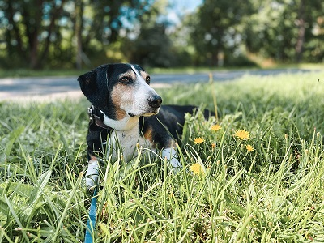
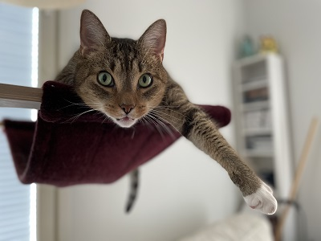

My name is Mikko, and this is my very first webpage 😀 I will update this site as I learn more about web development.
GitHubI'm a guy from Finland who graduated from XAMK in 2018 where I studied programming. My main focus during studying was game programming but I have since then branched out to learn about other fields such as web development! After I graduated I have worked in various places doing things like game development, technical support and customer service. You can find more about it in my CV. Here's some other fun info about me:
I had a dog called Everest 🐶:
Sadly we had to say goodbye to Everest on 16.10.2022. We all miss him dearly.
I also have a cat called Apsi 🐱:
Apsi is a 5 years old male domestic short-haired cat who likes to be a nuisance. He has destroyed 3 ethernet cables so far.